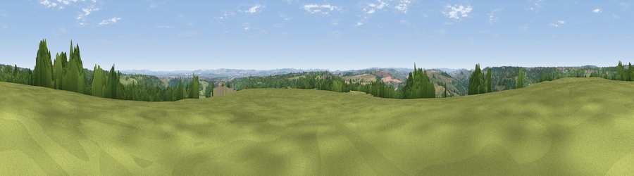

Viewpoint near Limpley Stoke
#11578 in England · top 17% of its area beats it · near Limpley StokeWhere it is
The exact computed spot (ST 77325 60525). Click the marker for map links.
The view, rendered

A 360° render of this exact spot computed from the terrain model, tree cover and land cover — summer colours, afternoon light, calibrated against photographs of famous viewpoints. Real trees, hedges and buildings will differ in detail.
The panorama
Grey silhouette: terrain skyline in each direction (720 bearings, Earth curvature and refraction included). Dashed green: skyline with trees (+15 m) and buildings (+8 m) as obstacles. Blue strip: how far the ground is visible on each bearing.
Where the view opens
Wedge length = distance to the farthest visible ground on that bearing (vegetation-aware). Rings at 10, 25 and 50 km.
What fills the view
45% grassland · 36% woodland · 16% cropland · 3% built-up
Angular shares of the visible panorama (visual magnitude), not map area. Landscape diversity 0.49 (0–1 Shannon).
Key numbers
More beautiful places nearby
The staircase of upgrades: each row has a higher view potential than everything closer. Driving times are estimates from straight-line distance, calibrated against real road routing — check an actual route before setting out.
| Place | Direction | Drive | Score |
|---|---|---|---|
| Viewpoint near Combe Hay | W · 5 km | ~11 min | 66.1 |
| Viewpoint near Inglesbatch | W · 6 km | ~13 min | 68.8 |
| Viewpoint near Kelston | NW · 9 km | ~18 min | 74.2 |
| Viewpoint near North Stoke | NW · 11 km | ~20 min | 75.4 |
| Hanging Hill | NNW · 11 km | ~21 min | 76.4 |
| Cley Hill | SSE · 17 km | ~30 min | 76.8 |
| Viewpoint near Lamyatt | SSW · 27 km | ~43 min | 77.8 |
| Beacon Batch | W · 29 km | ~46 min | 79.4 |
51.34335, -2.32693 · source: screening · position refined by local search. Computed location — check access rights before visiting.